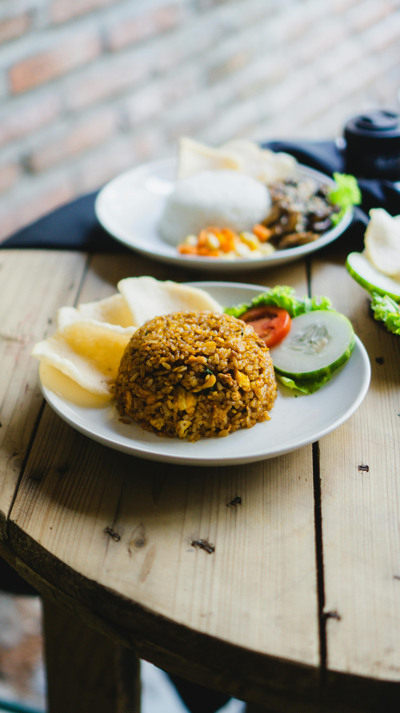

Nasi Goreng

Fried Rice also known as "Nasi Goreng"
Ingredients
-
3 cups cooked rice (preferably a day old)
-
200 grams chicken, diced
- 2 eggs, beaten
- 1 cup mixed vegetables (carrots, peas, corn)
- 2 cloves garlic, minced
- 1/2 cup diced onions
- 1/4 cup diced scallions
- 2 tablespoons soy sauce
- 1 tablespoon oyster sauce
- 1 teaspoon sesame oil
- 1/2 teaspoon white pepper
- 1/4 teaspoon salt
- 1/4 teaspoon sugar
- Enough cooking oil
🍚 Additional Toppings :
- Fried shallots
- Sliced cucumber
- Sliced tomatoes
- Fried eggs
- Chopped cilantro or parsley
🍚 Instructions :
- Heat oil in a wok or large pan over medium heat.
- Add minced garlic and diced onions, sauté until fragrant.
- Add diced chicken, cook until browned and cooked through.
- Push the chicken to one side of the wok, pour beaten eggs into the other side. Scramble the eggs until fully
cooked.
- Add mixed vegetables, stir-fry until they are tender.
- Add cooked rice to the wok, breaking up any clumps.
- Pour soy sauce, oyster sauce, sesame oil, white pepper, salt, and sugar over the rice. Mix well.
- Add diced scallions, continue to stir-fry for a few more minutes.
- Taste and adjust seasoning if necessary.
- Serve the fried rice hot, garnished with additional toppings of your choice.